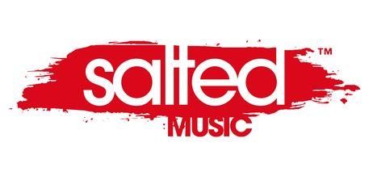

홈 > 브랜드 매거진 > Salted Music
Salted Music
Salted Music는 미디어·엔터테인먼트 브랜드로, 콘텐츠 포맷, 팬덤, 채널 운영, 지식재산권 확장이 함께 작동하는 영역입니다.
산업 분야 미디어·엔터테인먼트 · 공개 등급 디렉토리 · 브랜드 평가 3.2 ★

한눈에 보는 브랜드
Salted Music는 미디어·엔터테인먼트 브랜드입니다. 콘텐츠 포맷, 팬덤, 채널 운영, 지식재산권 확장이 함께 작동하는 영역으로 분류되며, 브랜드명과 업종, 운영 국가, 공개 로고 여부를 함께 보며 사전 항목의 기본 맥락을 확인할 수 있습니다.
브랜드 관점
제품·서비스 범위, 유통 방식, 시각 아이덴티티, 시장 포지션을 함께 비교하면 같은 산업의 다른 브랜드와 차이가 선명해집니다.
시작과 성장
미국 캘리포니아주 샌프란시스코를 거점으로 출범한 독립 일렉트로닉 댄스 음악 레이블이다. 딥하우스 디제이이자 프로듀서인 미겔 미그스(Miguel Migs)가 2004년 무렵 직접 운영을 시작했다.
시작 단계의 의도는 미그스가 디제이로 무대에서 틀고 싶은, 언더그라운드 감성의 비-사이드 더브와 소울 기반 사운드를 자유롭게 내놓을 창구를 마련하는 것이었다. 그는 처음부터 대형 레이블을 목표로 삼지 않았고, 본업과 병행하는 사이드 프로젝트로 즐기듯 운영하면서도 새로운 사운드와 신인을 꾸준히 밀어붙이는 데 의미를 뒀다.
이런 출발 덕분에 딥하우스, 소울풀, 더비, 누디스코 계열을 템포에 얽매이지 않고 폭넓게 다루는 색채가 자리 잡았다. 미그스는 1990년대 후반에서 2000년대 초반 딥하우스 흐름을 일찍 파고든 인물로 평가받았고, 그 감각이 레이블 초기 방향성에 그대로 반영됐다.
2009년에는 독립 음악 시상에서 베스트 인디 레이블 사이트 부문 청중 투표를 받기도 했다.
브랜드 아이덴티티
Salted Music의 아이덴티티는 브랜드명, 로고 사용 여부, 업종 언어, 국가적 배경을 중심으로 정리됩니다. 공개 로고 자산은 추후 권리 확인 후 보강할 수 있도록 텍스트 메타데이터 중심으로 관리합니다.
제품과 서비스
Salted Music의 제품과 서비스는 미디어·엔터테인먼트 범주에서 해석됩니다.
현재 상태
산업: 미디어·엔터테인먼트
타임라인
정리된 연도형 이벤트가 없습니다.
BI/CI 변천사
함께 읽을 브랜드
Br
Bros Music
미디어·엔터테인먼트 · 디렉토리Bros MusicBros Music는 독일의 미디어·엔터테인먼트 브랜드로, 콘텐츠 포맷, 팬덤, 채널 운영, 지식재산권 확장이 함께 작동하는 영역입니다.
0E
0711 엔터테인먼트
미디어·엔터테인먼트 · 디렉토리0711 엔터테인먼트0711 엔터테인먼트는 독일의 미디어·엔터테인먼트 브랜드로, 콘텐츠 포맷, 팬덤, 채널 운영, 지식재산권 확장이 함께 작동하는 영역입니다.
10
105music
미디어·엔터테인먼트 · 디렉토리105music105music는 독일의 미디어·엔터테인먼트 브랜드로, 콘텐츠 포맷, 팬덤, 채널 운영, 지식재산권 확장이 함께 작동하는 영역입니다.
24
2419 Record Label
미디어·엔터테인먼트 · 디렉토리2419 Record Label2419 Record Label는 네덜란드의 미디어·엔터테인먼트 브랜드로, 콘텐츠 포맷, 팬덤, 채널 운영, 지식재산권 확장이 함께 작동하는 영역입니다.
 미디어·엔터테인먼트 · 디렉토리5 Minute Walk
미디어·엔터테인먼트 · 디렉토리5 Minute Walk5 Minute Walk는 미국의 미디어·엔터테인먼트 브랜드로, 콘텐츠 포맷, 팬덤, 채널 운영, 지식재산권 확장이 함께 작동하는 영역입니다.
75
75 Ark
미디어·엔터테인먼트 · 디렉토리75 Ark75 Ark는 미국의 미디어·엔터테인먼트 브랜드로, 콘텐츠 포맷, 팬덤, 채널 운영, 지식재산권 확장이 함께 작동하는 영역입니다.
77
77 Records
미디어·엔터테인먼트 · 디렉토리77 Records77 Records는 영국의 미디어·엔터테인먼트 브랜드로, 콘텐츠 포맷, 팬덤, 채널 운영, 지식재산권 확장이 함께 작동하는 영역입니다.
BT
블랙 탑 레코드
미디어·엔터테인먼트 · 디렉토리블랙 탑 레코드블랙 탑 레코드는 미국의 미디어·엔터테인먼트 브랜드로, 콘텐츠 포맷, 팬덤, 채널 운영, 지식재산권 확장이 함께 작동하는 영역입니다.